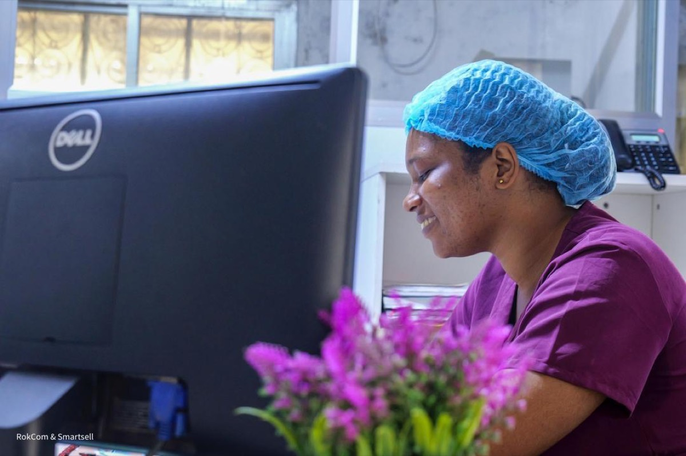
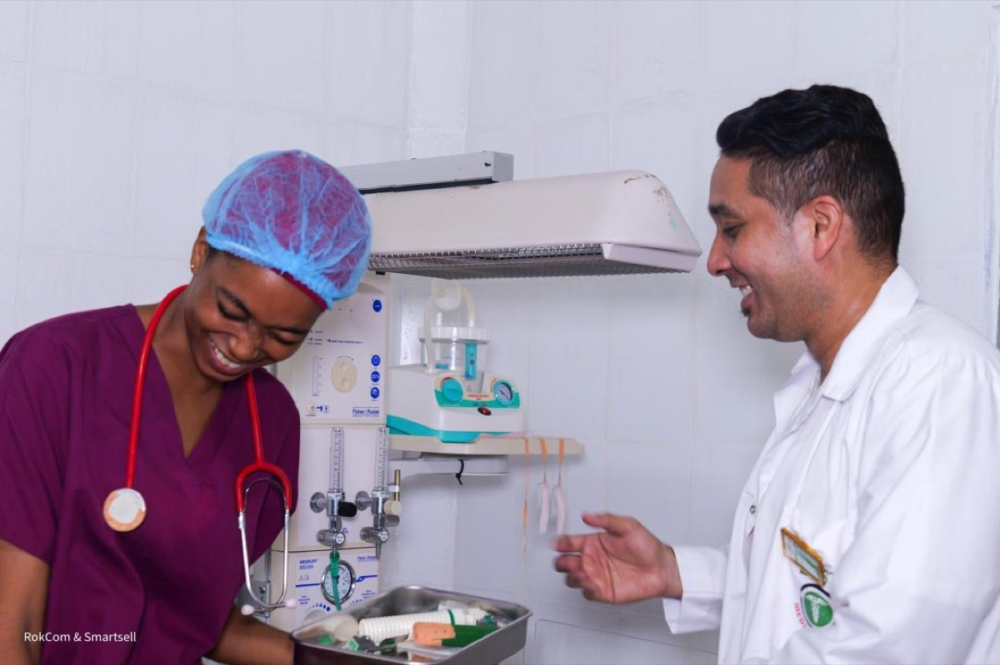
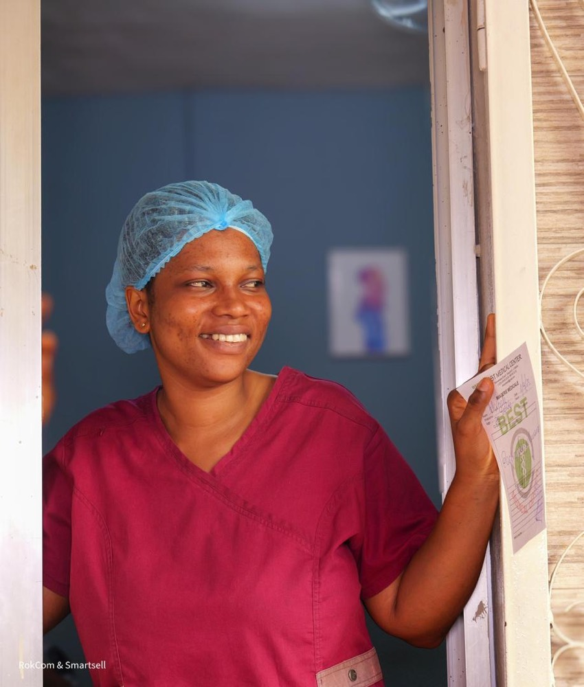

Accueil & orientation
Vérification du dossier, orientation et coordination du parcours.
Accueil, consultation, soins et analyses réunis dans un parcours cohérent, avec une équipe qui vous accompagne à chaque étape.


“La technologie doit raccourcir l’attente,
jamais la relation humaine.”
Votre visite
Chaque zone donne une prochaine étape claire et réduit les déplacements inutiles.
Vérification du dossier, orientation et coordination du parcours.

Des espaces confidentiels, organisés autour du patient.

Prélèvement, suivi et résultats accessibles depuis le même dossier.
Qualité & formation
Protocoles partagés, échanges réguliers et formation continue soutiennent une prise en charge cohérente.
Rencontrer l’équipe →Avant votre arrivée
Ou tout document d’identification disponible.
Ajoutez-les dans l’espace patient ou apportez-les au centre.
Une vérification de prise en charge peut être simulée en ligne.